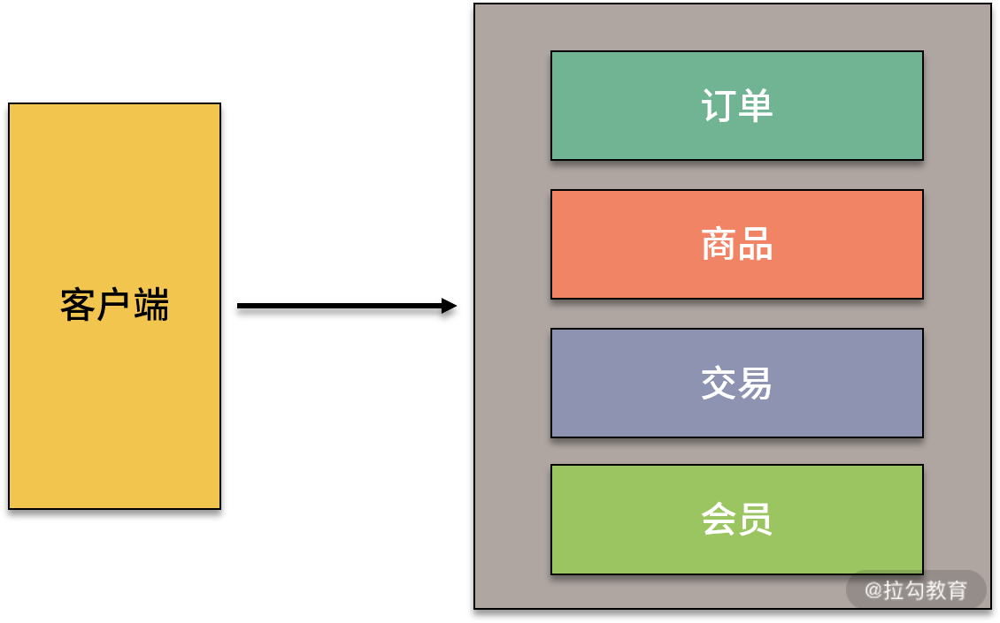

- 00 开篇词：搭建分布式知识体系，挑战高薪 Offer.md.html
- 01 如何证明分布式系统的 CAP 理论？.md.html
- 02 不同数据一致性模型有哪些应用？.md.html
- 03 如何透彻理解 Paxos 算法？.md.html
- 04 ZooKeeper 如何保证数据一致性？.md.html
- 05 共识问题：区块链如何确认记账权？.md.html
- 06 如何准备一线互联网公司面试？.md.html
- 07 分布式事务有哪些解决方案？.md.html
- 08 对比两阶段提交，三阶段协议有哪些改进？.md.html
- 09 MySQL 数据库如何实现 XA 规范？.md.html
- 10 如何在业务中体现 TCC 事务模型？.md.html
- 11 分布式锁有哪些应用场景和实现？.md.html
- 12 如何使用 Redis 快速实现分布式锁？.md.html
- 13 分布式事务考点梳理 + 高频面试题.md.html
- 14 如何理解 RPC 远程服务调用？.md.html
- 15 为什么微服务需要 API 网关？.md.html
- 16 如何实现服务注册与发现？.md.html
- 17 如何实现分布式调用跟踪？.md.html
- 18 分布式下如何实现配置管理？.md.html
- 19 容器化升级对服务有哪些影响？.md.html
- 20 ServiceMesh：服务网格有哪些应用？.md.html
- 21 Dubbo vs Spring Cloud：两大技术栈如何选型？.md.html
- 22 分布式服务考点梳理 + 高频面试题.md.html
- 23 读写分离如何在业务中落地？.md.html
- 24 为什么需要分库分表，如何实现？.md.html
- 25 存储拆分后，如何解决唯一主键问题？.md.html
- 26 分库分表以后，如何实现扩容？.md.html
- 27 NoSQL 数据库有哪些典型应用？.md.html
- 28 ElasticSearch 是如何建立索引的？.md.html
- 29 分布式存储考点梳理 + 高频面试题.md.html
- 30 消息队列有哪些应用场景？.md.html
- 31 集群消费和广播消费有什么区别？.md.html
- 32 业务上需要顺序消费，怎么保证时序性？.md.html
- 33 消息幂等：如何保证消息不被重复消费？.md.html
- 34 高可用：如何实现消息队列的 HA？.md.html
- 35 消息队列选型：Kafka 如何实现高性能？.md.html
- 36 消息队列选型：RocketMQ 适用哪些场景？.md.html
- 37 消息队列考点梳理 + 高频面试题.md.html
- 38 不止业务缓存，分布式系统中还有哪些缓存？.md.html
- 39 如何避免缓存穿透、缓存击穿、缓存雪崩？.md.html
- 40 经典问题：先更新数据库，还是先更新缓存？.md.html
- 41 失效策略：缓存过期都有哪些策略？.md.html
- 42 负载均衡：一致性哈希解决了哪些问题？.md.html
- 43 缓存高可用：缓存如何保证高可用？.md.html
- 44 分布式缓存考点梳理 + 高频面试题.md.html
- 45 从双十一看高可用的保障方式.md.html
- 46 高并发场景下如何实现系统限流？.md.html
- 47 降级和熔断：如何增强服务稳定性？.md.html
- 48 如何选择适合业务的负载均衡策略？.md.html
- 49 线上服务有哪些稳定性指标？.md.html
- 50 分布式下有哪些好用的监控组件？.md.html
- 51 分布式下如何实现统一日志系统？.md.html
- 52 分布式路漫漫，厚积薄发才是王道.md.html
- 捐赠
15 为什么微服务需要 API 网关？
本课时我们主要讲解为什么微服务需要 API 网关。
对网关我们并不陌生，网关的概念来源于计算机网络，表示不同网络之间的关口。在系统设计中，网关也是一个重要的角色，其中最典型的是各大公司的开放平台，开放平台类网关是企业内部系统对外的统一入口，承担了很多业务，比如内外部数据交互、数据安全、监控统计等功能。
在微服务架构中，API 网关的作用和开放平台等传统网关又有一些不同，下面一起来看一下微服务中 API 网关的相关知识。
为什么需要网关
在微服务架构中，一个大应用被拆分成多个小的服务，这些微服务自成体系，可以独立部署和提供对外服务。一般来说，微服务的调用规范主要有 RPC 和 Restful API 两种，API 网关主要针对的是后面一种，也就是以 Spring Cloud 为代表的微服务解决方案。
从一个实际场景入手
假设我们要使用微服务构建一个电商平台，一般来说需要订单服务、商品服务、交易服务、会员服务、评论服务、库存服务等。
移动互联网时代，我们的系统不仅会通过 Web 端提供服务，还有 App 端、小程序端等，那么不同客户端应该如何访问这些服务呢？
如果在单体应用架构下，所有服务都来自一个应用工程，客户端通过向服务端发起网络调用来获取数据，通过 Nginx 等负载均衡策略将请求路由给 N 个相同的应用程序实例中的一个，然后应用程序处理业务逻辑，并将响应返回给客户端。

在微服务架构下，每个服务都是独立部署，如果直接调用，系统设计可能是这样的：

各个调用端单独去发起连接，会出现很多问题，比如不容易监控调用流量，出现问题不好确定来源，服务之间调用关系混乱等。
如何解决这个局面呢
针对这些问题，一个常用的解决方案是使用 API 服务网关。在微服务设计中，需要隔离内外部调用，统一进行系统鉴权、业务监控等，API 服务网关是一个非常合适的切入口。
通过引入 API 网关这一角色，可以高效地实现微服务集群的输出，节约后端服务开发成本，减少上线风险，并为服务熔断、灰度发布、线上测试等提供解决方案。
使用网关，可以优化微服务架构中系统过于分散的弊端，使得架构更加优雅，选择一个适合的 API 网关，可以有效地简化开发并提高运维与管理效率。
应用网关的优劣
API 网关在微服务架构中并不是一个必需项目，而是系统设计的一个解决方案，用来整合各个不同模块的微服务，统一协调服务。
API 网关自身也是一个服务，网关封装了系统内部架构，为每个客户端提供了一个定制的 API。从面向对象设计的角度看，它与外观模式（Facade Pattern）类似，外观模式的定义是，外部与一个子系统的通信必须通过一个统一的外观对象进行，为子系统中的一组接口提供一个一致的界面，这一点和 API 网关的作用非常类似。
除了封装内部系统之外，API 网关作为一个系统访问的切面，还可以添加身份验证、监控、负载均衡、限流、降级与应用检测等功能。
通过在微服务架构中引入 API 网关，可以带来以下的收益：
- API 服务网关对外提供统一的入口供客户端访问，隐藏系统架构实现的细节，让微服务使用更为友好；
- 借助 API 服务网关可统一做切面任务，避免每个微服务自己开发，提升效率，使系统更加标准化；
- 通过 API 服务网关，可以将异构系统进行统一整合，比如外部 API 使用 HTTP 接口，内部微服务可以使用一些性能更高的通信协议，然后在网关中进行转换，提供统一的外部 REST 接口；
- 通过微服务的统一访问控制，可以更好地实现鉴权，提高系统的安全性。
API 网关并不是一个必需的角色，在系统设计中引入网关，也会导致系统复杂性增加，带来下面的问题：
- 在发布和部署阶段需要管理网关的配置，保证外部 API 访问的是正常的服务实例；
- API 服务网关需要实现一个高可用伸缩性强的服务，避免单点失效，否则会成为系统的瓶颈；
- 引入API 服务网关额外添加了一个需要维护的系统，增加了开发和运维的工作量，提高了系统复杂程度。
可以看到，应用API 网关需要权衡带来的收益和因此增加的复杂性，这也是我们前面说的，分布式系统是复杂性和收益的平衡，需要针对具体业务进行合理的架构设计。
微服务网关选型
在微服务领域，有许多开源网关实现，应用比较多的是 Spring Cloud Zuul 和 Spring Cloud Gateway。
Spring Cloud Zuul
Spring Cloud Zuul 是 Spring Cloud Netflix 项目的核心组件之一，是 Netflix 开发的一款提供动态路由、监控、弹性、安全的网关服务。
Zuul 分为 1.x 和 2.x 两个大版本，1.x 版本是基于 Servlet 构建的，采用的是阻塞和多线程方式。1.x 版本在 Spring Cloud 中做了比较好的集成，但是性能不是很理想。后来 Netflix 宣布开发 2.x 版本，目前已经更新到了 2.x 版本，不过 Spring Cloud 官方并没有集成，而是开发了自己的 Spring Cloud Gateway。
Spring Cloud Gateway
Spring Cloud Gateway 是 Spring Cloud 体系的第二代网关组件，基于 Spring 5.0 的新特性 WebFlux 进行开发，底层网络通信框架使用的是 Netty。
Spring Cloud Gateway 可以替代第一代的网关组件 Zuul。Spring Cloud Gateway 可以通过服务发现组件自动转发请求，集成了 Ribbon 做负载均衡，支持使用 Hystrix 对网关进行保护，当然也可以选择其他的容错组件，比如集成阿里巴巴开源的 Sentinel，实现更好的限流降级等功能。
总结
这一课时分享了 API 网关的应用场景，使用网关带来的收益，以及对应增加的系统复杂度，最后介绍了两款开源微服务网关选型。希望通过本课时的学习，能够让你对 API 服务网关有一个初步的认识，对文中提到的 Zuul 和 Spring Cloud Gateway 两大组件，以及背后相关的技术实现，如 WebFlux，官网有非常多的学习资料，感兴趣的同学可以在课后学习。
© 2019 - 2023 Liangliang Lee. Powered by gin and hexo-theme-book.